Якщо натиснути на опцію "New game", тоді нам відкриється меню ігрових режимів. В меню ігрових режимів входить
такі опції:
Men vs Men - опція у котрій гра буде відбуватися між двома гравцями. Один гравець буде керувати
динозавром, а задача іншого - викликати йому перешкоди
Men vs AI - опція поки що не доступна(буде доступна в наступних релізах)
AI vs AI - опція поки що не доступна(буде доступна в наступних релізах)
Back - опція для повернення на головне меню
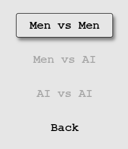
Men vs Men
Після вибору режиму гри "Men vs Men", відкривається сам ігровий інтерфейс.
У верхньому правому куті можна побачити цифри і надпис "Score" - це є очки, які зароблені за
пройдений шлях гри. Якщо дракончик не проходить якусь перешкоду, то гразакінчується і кінцеві очки
записуються в "HI", яке відображається лівіше від "Score".
У лівому нижньому куті знаходиться наш дракончик, котрим буде керувати один з гравців. Керування
дракончиком показано нижче.
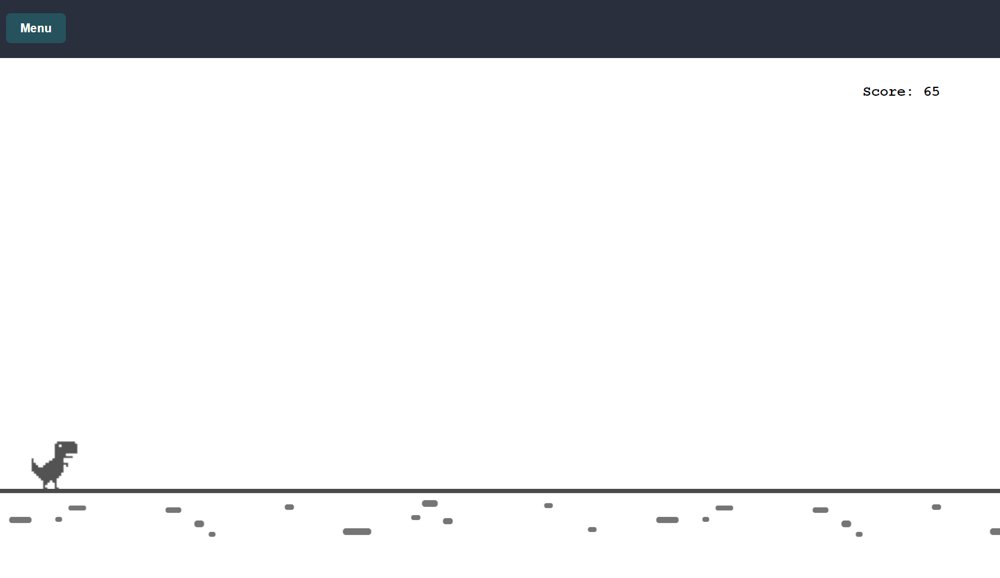
Керувати дракончиком можна за допомогою двох кнопок:
За допомогою кнопки "S" наш дракончик пригинається від літаючих кажанів. Якщо дракончик вчасно
пригнувся і не зачіпив кажанів, то гра продовжується
За допомогою кнопки "Space" наш дракончик перестрибує через кактуси, які будуть появлятися на
його шляху(ці перешкоди буде створювати другий гравець). Якщо дракончик вчасно підстибнув і не зачіпив
кактусів, то гра продовжується
Button in keyboard
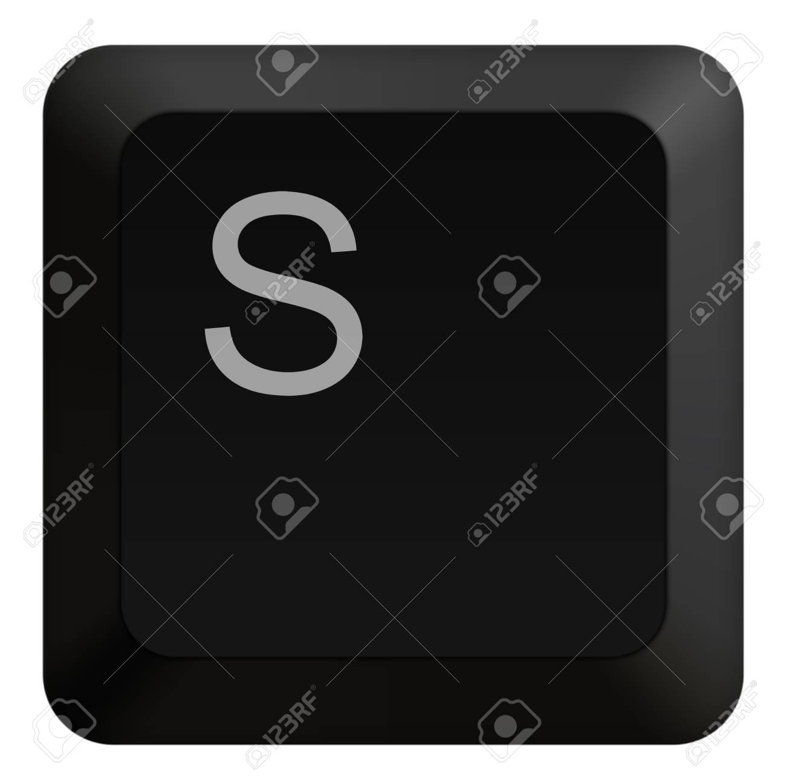
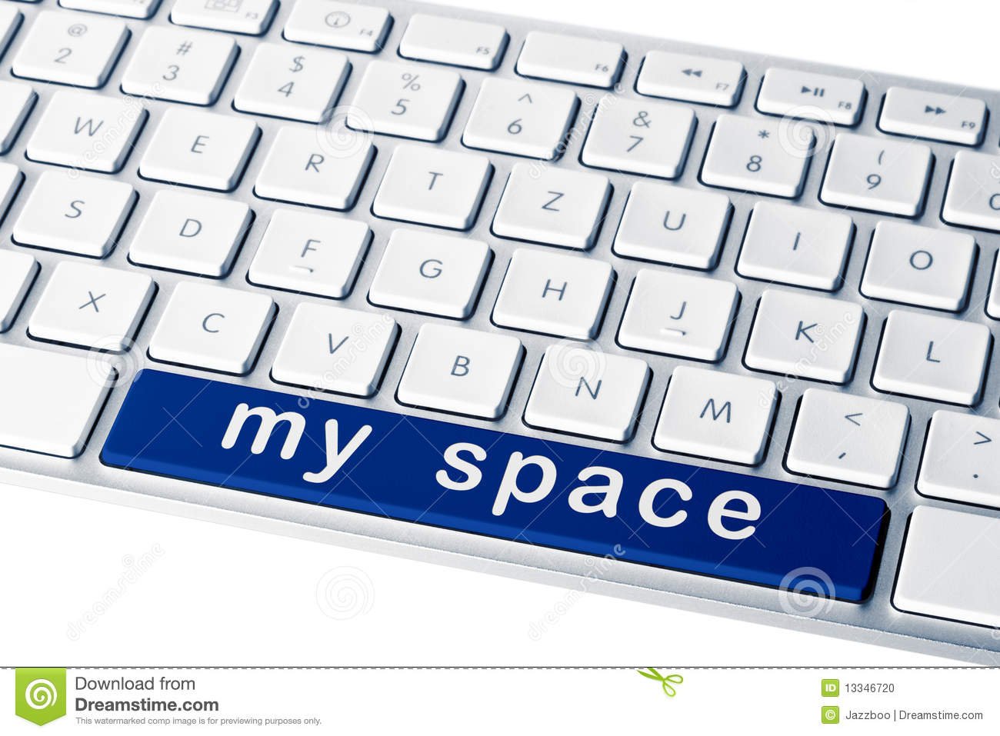
Dino move in game
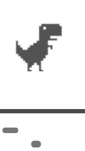
Викликати перешкоди можна за допомогою трьох кнопок (проте, щоб можна було чесно грати, то на виклик
перешкод було зроблено затримку в 0.5 секунди. Потрібно не зажимати, а періодично тиснути.
):
За допомогою кнопки "arrow-down" у грі появиться нова перешкода у вигляді кактуса. Якщо
дракончик вчасно
перестрибне і не зачіпить кактус, то гра продовжується. Кактус буде приближуватися до нашого дракончека
все ближче і ближче
За допомогою кнопки "arrow-right" у грі появиться нова перешкода у вигляді кажана. Якщо
дракончик вчасно
пригнеться і не зачіпить кажана, то гра продовжується. Кажан буде приближуватися до нашого дракончека все
ближче і ближче
За допомогою кнопки "arrow-right" у грі появиться нова перешкода у вигляді об'єднаних трьох
кактусів. Якщо дракончик вчасно
підстибне і не зачіпить кактусів, то гра продовжується. Кактуси будуть приближуватися до нашого
дракончека все ближче і ближче
Button in keyboard
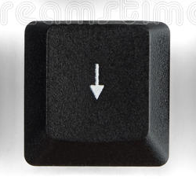
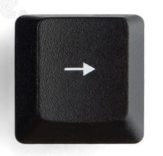
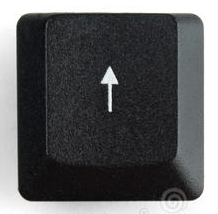
Bariers move in game
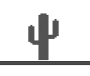
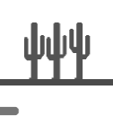
Якщо дракончик врізається в якусь перешкоду, то гра закінчується і на екрані появляється ігрове меню яке в
себе включає дві опції :
Start again - опція для початку гри знову
Exit - опція для переходу на головне меню
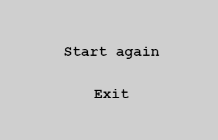